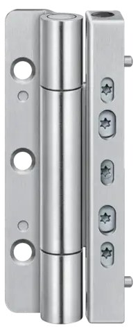

CREATURA
SIMONSWERK
06 / 11
Для входных дверей из ПВХ

SIKU
SIKU RB · 3D K6 · K3 · K4 · K-петли
Петли для входных дверей из ПВХ: безопасность, теплоизоляция и эстетика.
SIKU RB
нерж. сталь, до 120 кг, без разрыва уплотнителя
K6
до 160 кг
K3 · K4
до 120 кг · до 80 кг
Регулировка
3D: ±3 / ±3 / ±1,5 мм